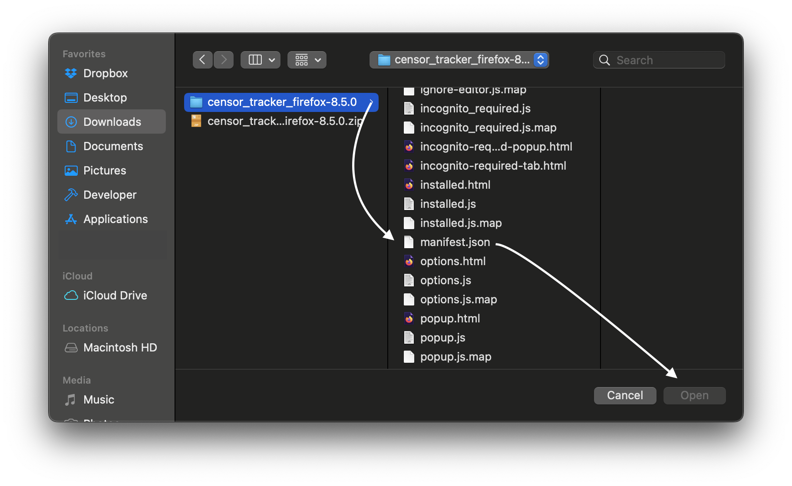
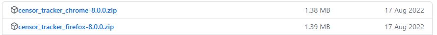
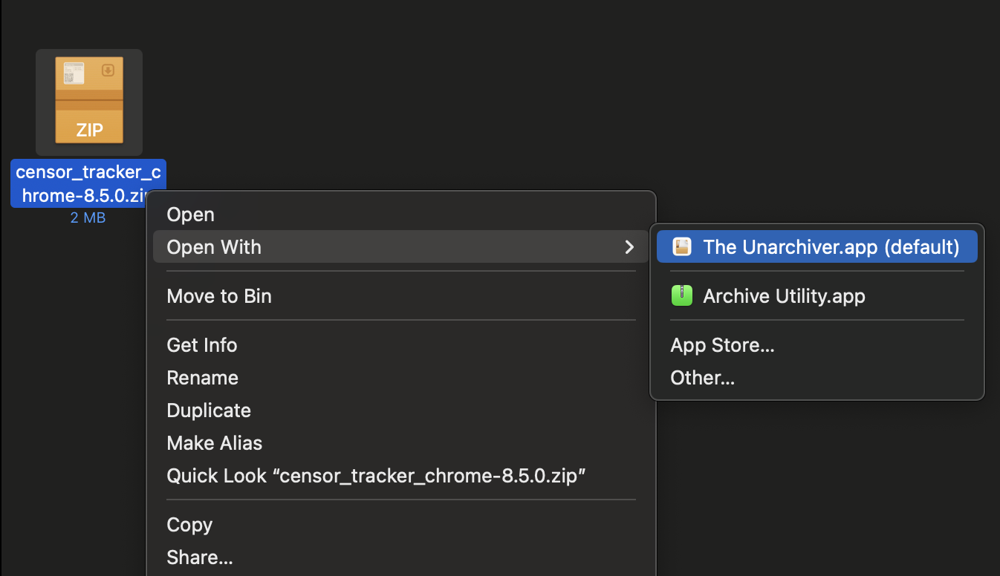
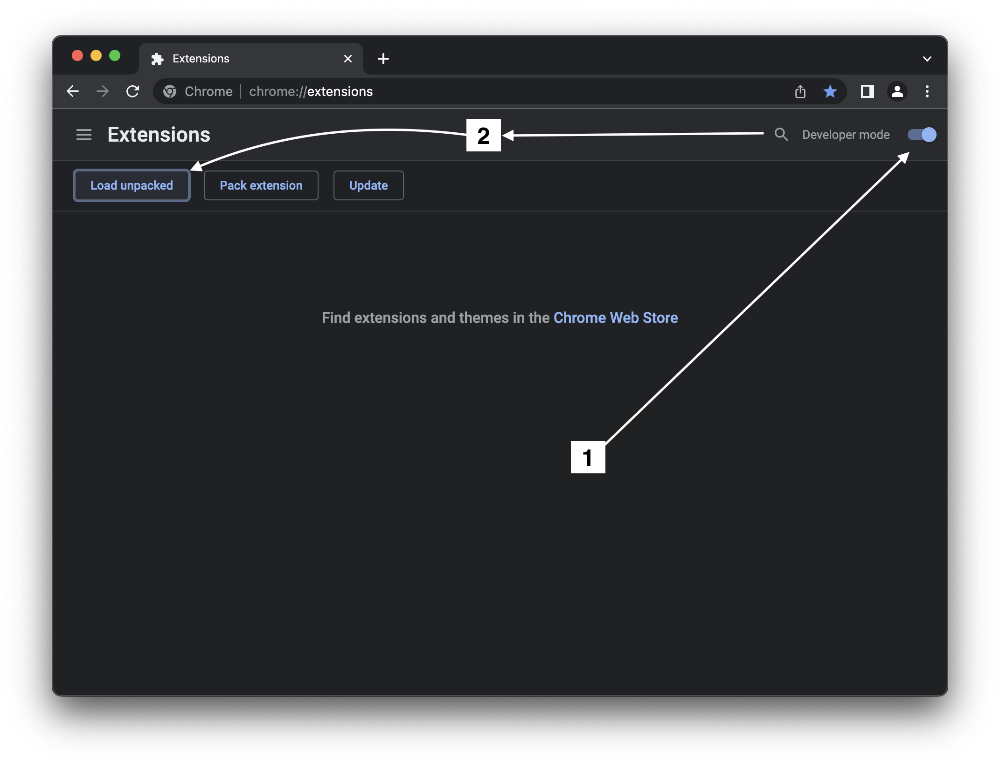
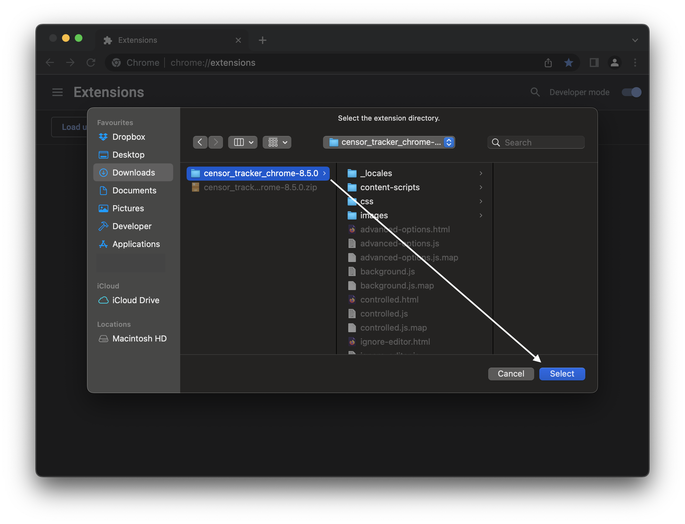

Frequently Asked Questions
- Firefox Browser Add-ons — for Firefox;
- Chrome Web Store — for Chrome, Edge, Brave, Opera, Yandex Browser and other Chromium-based browsers;
- GitHub releases page — archives for manual installation if the store is not available.
Censor Tracker automatically opens sites from the registry of blocked sites for your region through a proxy. Sites that are slowed down or blocked outside the registry (for example, YouTube and Telegram in Russia) are not in the registry, so you must add them manually.
Large sites load content from several addresses. For example, the YouTube page comes from youtube.com, but thumbnails and videos come from ytimg.com and googlevideo.com. So you add a site in two steps: first the main address, so that the page opens, then the related addresses, so that images and videos load.
- Open the extension settings —> Proxying List.
- Enter the main address of the site without
https://andwww— for example,youtube.com. Subdomains are included automatically:youtube.comcoverswww.youtube.comandm.youtube.com. - Click Save changes.
- Open the site and wait until the page fully loads. If the site has a video, start it, so that the browser connects to the video servers.
- Click the Censor Tracker icon, then click ⁝ next to the site address.
- Expand Related CDN/API domains and click Find domains.
- Select the addresses that belong to the site and click Proxy selected domains.
- Reload the page.
The extension looks for addresses among the resources that the page has already loaded, so step 2 works only after the site opens. Usually you need the addresses that contain the name of the site or its owner.
Most problems are solved by one of the steps below. After each step, check if the site opens. Go to the next step only if it does not.
If YouTube, Telegram or other sites that are slowed down outside the registry do not open, add them to the extension manually. See How do I get to a blocked site?
To open the extension settings, click the Censor Tracker icon in the browser toolbar —> click the gear in the upper right corner of the window.
- Browser version. The extension works in Google Chrome 108 and later (and in browsers based on it) and in Firefox 91.1 and later. The latest browser version is best.
- Permission to run in private windows (Firefox only). Without this permission, Firefox does not let the extension control the proxy (more on the Firefox developer site).
To allow it: open
about:addons—> Extensions —> Censor Tracker —> Details tab —> set Run in Private Windows to Allow. - Other VPN and proxy extensions. Only one extension can control the proxy in the browser, so Censor Tracker does not work together with other extensions that bypass blocking. Disable them in the browser settings —
chrome://extensionsin Chrome,about:addonsin Firefox. The off button inside the other extension is not sufficient: an extension that is turned off this way can still keep control of the proxy. After you disable them, restart the browser. Also disable the VPN client on your device while you check: with it, the extension can detect the wrong country. - Antivirus. Antivirus software that inspects HTTPS traffic can interfere with the proxy. Disable the HTTPS inspection module in the antivirus. If there is no such setting, check if it helps to temporarily disable the antivirus.
- Region. The extension detects your country automatically and can make a mistake, especially when a VPN is on. You can select the region manually: settings —> Region.
- Database update. Settings —> Advanced Options —> Force update the extension's local database. You must do this step after you change the region: without it, the list of blocked sites stays the same.
- Proxy check. Settings —> Proxy Settings —> expand Manage proxies —> below, expand Check proxies —> Check selected. After a few seconds, the Last check column shows the result: Available — the server responds, Check failed — the server is not available, and you should contact us.
- Reset settings. Settings —> Advanced Options —> Reset to default. If you added your own sites, save them first with Export Settings, and after the reset restore them with Import Settings.
- Reinstall. Sometimes after an extension update, only a reinstall helps.
If nothing from above helped, contact us — we will help you solve the problem.
username:password@hostname,
in the second please enter the port.
- support bot in Telegram — @censortracker_support_bot;
- email — support@censortracker.org;
- community chat in Telegram — for questions to the community and discussion of the extension.
- The browser name and version.
- Which site does not open and what happens: an error, endless loading, a page without images or videos.
- The extension debug information: settings —> Advanced Options —> Debug information —> Copy. It has no browsing history or passwords — only the extension settings and state. Site addresses in error messages are hidden.
Yes, in two ways — it depends on the size of the list.
Small list — up to 1,000 domainsSettings —> Proxying List —> Load from a file or URL. You can select a text file on your device or enter a link to a file on the internet — for example, on GitHub Gist. The domains are added to the list. Then click Save changes.
List requirements:- one domain on each line;
- not more than 1,000 domains in the list, including the domains that are already added;
- for upload from a device — a text file of up to 64 KB.
Duplicate domains are removed automatically.
Large list — up to 1,000,000 domainsSettings —> Region —> External registry (optional):
- In Source, select Custom hostname list.
- In Registry URL, enter the link to the list.
- Select Use this downloaded list.
- Optionally, select Update automatically with the registry — then the list updates every 15 minutes while the extension and the proxy are on.
- Click Save and download now.
You can use a text list with one domain on each line, a JSON array or a JSON object with a domains array. Limits: 32 MB and 30 seconds for the download. The external registry adds to the built-in registry, it does not replace it. If the download fails, the extension keeps the last valid list.
The list is downloaded from your device, so the owner of the source can see your IP address. Use sources that you trust.
- 1. Download the latest archive with the extension from our GitHub repository.
- 2. Unzip the Extension into a new folder.
- 3. Open a
"New Tab"and go to this address:about:debugging#/runtime/this-firefox. - 4. Next, click the Download temporary add-on button.
- 5. Go to the folder where you unpacked the extension and select the
manifest.json. - Ready! You can use the extension.
- *You will need to do this every time you start the browser.
Install the extension in Firefox



- 1. Download the latest archive with the extension from our GitHub repository.
- 2. Unzip the Extension into a new folder.
- 3. Open a
"New Tab"and go to this address:chrome://extensions. - 4. In the upper right corner, turn on
"Developer Mode". - 5. Next, click on the button Download the unpacked file.
- 6. Select the folder where you unzipped the extension.
- Ready! You can use the extension.
Install the extension in Google Chrome



